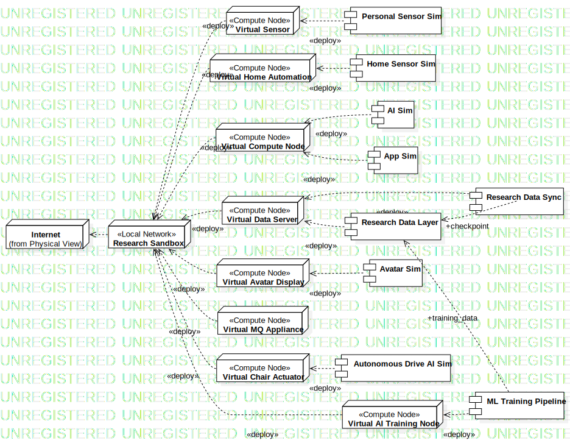
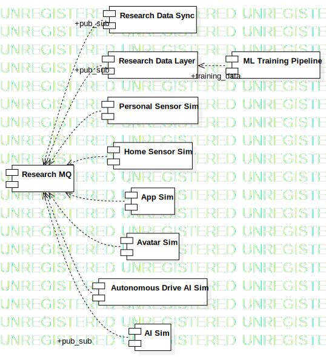

Research Sandbox
UMLPackage
Untitled
::
Physical View
::
Research Sandbox
Description
none
Diagrams

Research Sandbox Deployment

Research Sandbox Integration
Properties
Name
Value
name
Research Sandbox
stereotype
null
visibility
public
importedElements
Owned Elements
Research MQ
Research Data Sync
Research Data Layer
Personal Sensor Sim
Home Sensor Sim
AI Sim
App Sim
Avatar Sim
Autonomous Drive AI Sim
ML Training Pipeline
«Local Network»Research Sandbox
«Compute Node»Virtual Sensor
«Compute Node»Virtual Home Automation
«Compute Node»Virtual Compute Node
«Compute Node»Virtual Data Server
«Compute Node»Virtual Avatar Display
«Compute Node»Virtual MQ Appliance
«Compute Node»Virtual Chair Actuator
«Compute Node»Virtual AI Training Node
Research Sandbox Deployment
Research Sandbox Integration